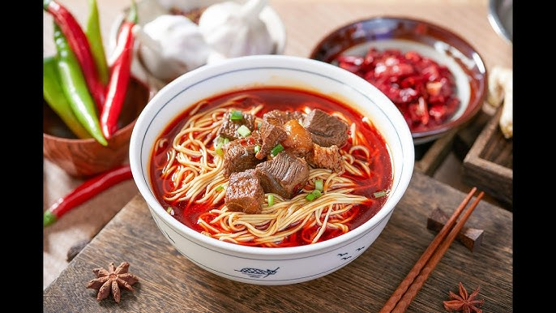
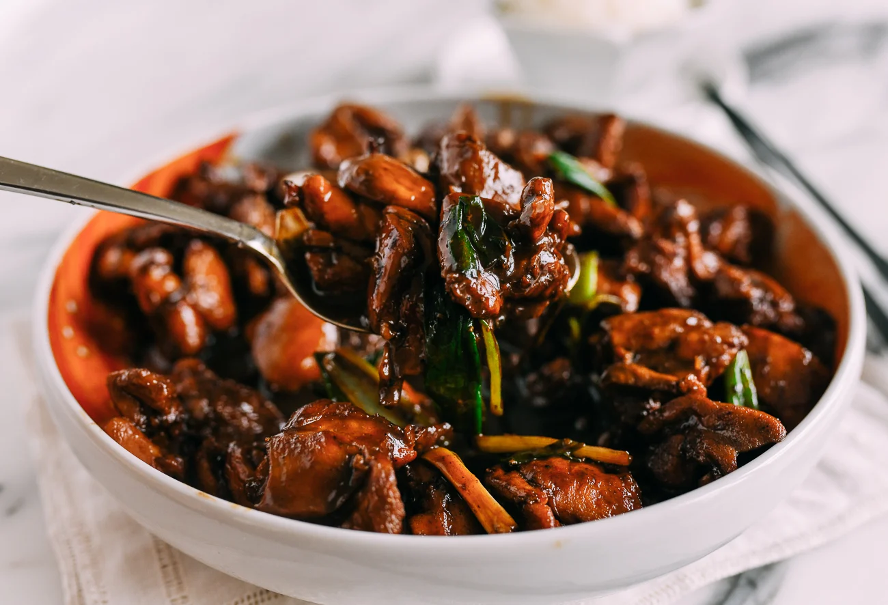
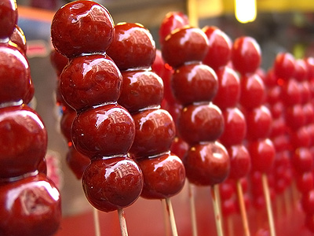

Zhengzhou Braised Noodles are the city’s soul food—thick, chewy wheat noodles simmered in a rich, savory sauce with pork belly, potatoes, and carrots. This dish isn’t just a meal; it’s a tradition—locals eat it for lunch, dinner, and even sometimes breakfast.What makes Zhengzhou’s version unique is the noodles: they’re hand-pulled (or rolled) to be wide and thick, so they hold onto the sauce. The sauce is made by slow-cooking pork belly with soy sauce, star anise, cinnamon, and rock sugar—this gives it a deep, sweet-savory flavor that’s impossible to resist. The potatoes and carrots add texture and sweetness, making the dish hearty and balanced.The best place to try it is at Laobaixing Braised Noodles, a local chain with over 50 branches in Zhengzhou. Their noodles are made fresh daily, and the sauce is simmered for 3 hours—you’ll see locals lining up at lunchtime, waiting for their steaming bowl. A classic order comes with a side of pickled garlic—its tangy sharpness cuts through the richness of the sauce, balancing every bite. What’s heartwarming about this dish is its familiarity: grandmothers cook it for family gatherings, street stalls serve it to busy workers, and it’s even a staple at university cafeterias. It’s not just food; it’s a taste of Zhengzhou’s everyday life.
Noodles: Wide, thick, and chewy—each strand has a slight wheat fragrance, and its texture holds the sauce without turning soggy.
Sauce: Deep amber in color, with a sweet-savory depth from slow-cooked pork belly and spices. The star anise and cinnamon add a subtle warmth, while the rock sugar softens the saltiness of the soy sauce.
Toppings: Pork belly is tender and fatty (in the best way), melting in your mouth; potatoes are fluffy and absorb the sauce; carrots add a slight crunch and natural sweetness.
Overall Balance: Hearty but not heavy—perfect for refueling after a day of hiking or exploring ruins.
Street Stalls/Daily Eateries: 12–18 CNY/bowl (generous portion, enough for one person; extra pork +5 CNY).
Laobaixing Braised Noodles (Chain): 18–25 CNY/bowl (premium ingredients, larger portion, and free refills of pickled garlic).
University Cafeterias: 8–12 CNY/bowl (budget-friendly, popular with students).

Xingyang Braised Chicken hails from Xingyang City (a short drive west of Zhengzhou) and is a beloved regional specialty with a history of over 200 years. Unlike ordinary braised chicken, it uses free-range “mountain chickens” raised in the hills around Xingyang—these chickens have firmer, more flavorful meat than factory-farmed ones. The dish is a staple at family feasts and local restaurants, often served during festivals or when hosting guests.The key to its fame is the braising process: the chicken is simmered in a clay pot with soy sauce, rice wine, ginger, star anise, and a secret blend of local herbs (including astragalus, which adds a subtle earthy note). The clay pot locks in moisture, making the meat tender enough to fall off the bone, while the sauce thickens into a glossy coating that clings to every piece. Traditionally, it’s served with steamed mantou (steamed buns)—you tear off a piece of mantou and dip it in the sauce, so no drop goes to waste.
Chicken Meat: Tender but not mushy, with a strong, fresh chicken flavor (no “gamey” taste). The skin is thin and sligh
Sauce: Dark, glossy, and savory, with a hint of sweetness from rice wine. The herbs add a gentle complexity—you won’t taste them directly, but they elevate the overall flavor.
Pairing with Mantou: The soft, fluffy mantou soaks up the sauce, turning into a savory-sweet bite that complements the chicken perfectly.
Local Restaurants in Xingyang: 68–88 CNY/small pot (serves 2–3 people); 128–158 CNY/large pot (serves 4–5 people).
Zhengzhou Downtown Eateries: 88–108 CNY/small pot (uses imported Xingyang chicken, slightly pricier).
Home-Style Cafés: 58–78 CNY/small pot (uses regular chicken but follows the traditional recipe).

Sugarcoated Hawthorns, or “Tang Hulu,” is a classic Chinese street snack—and Zhengzhou’s version is a nostalgic favorite, sold by vendors on almost every busy street, especially near tourist sites like Shang City Ruins Park or Shaolin Temple. It’s simple but irresistible: fresh hawthorn berries (tart and slightly sweet) are skewered on a bamboo stick, dipped in hot sugar syrup, and left to cool until the syrup hardens into a crispy, glass-like coating.In Zhengzhou, you’ll find two main variations: the traditional “red Tang Hulu” (just hawthorns) and “mixed Tang Hulu” (hawthorns alternated with grapes, strawberries, or even candied yams). Winter is the best time to enjoy it— the cold air makes the sugar coating extra crisp, and the tart hawthorns are a refreshing contrast to heavy winter foods. It’s not just a snack for kids; adults love it too, as it brings back childhood memories of winter evenings spent wandering the streets.
Sugar Coating: Thin, crispy, and sweet—like hard candy, it shatters when you bite into it, releasing a burst of sweetness.
Hawthorns: Tart and slightly juicy, with a soft flesh. The tartness cuts through the sugar, so it never feels cloying.
Overall:Mixed Variations: Grapes add a juicy sweetness, strawberries bring a fresh fruity note, and candied yams add a chewy, caramel-like texture.
Street Vendors: 5–8 CNY/stick (traditional hawthorns); 8–12 CNY/stick (mixed fruits).
Tourist Sites (e.g., Shaolin Temple): 8–10 CNY/stick (slightly pricier, but convenient).
Supermarkets: 10–15 CNY/pack (3–4 sticks, pre-made—great for a quick snack on the go).